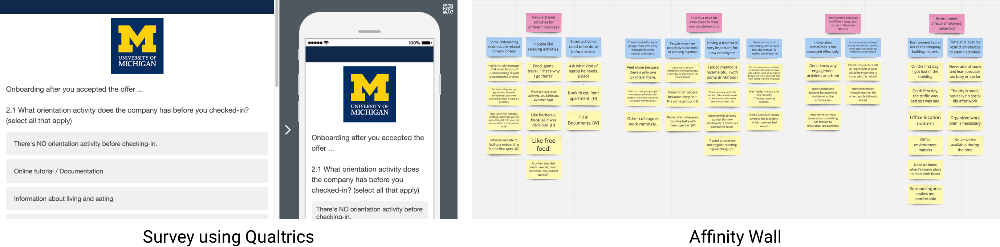
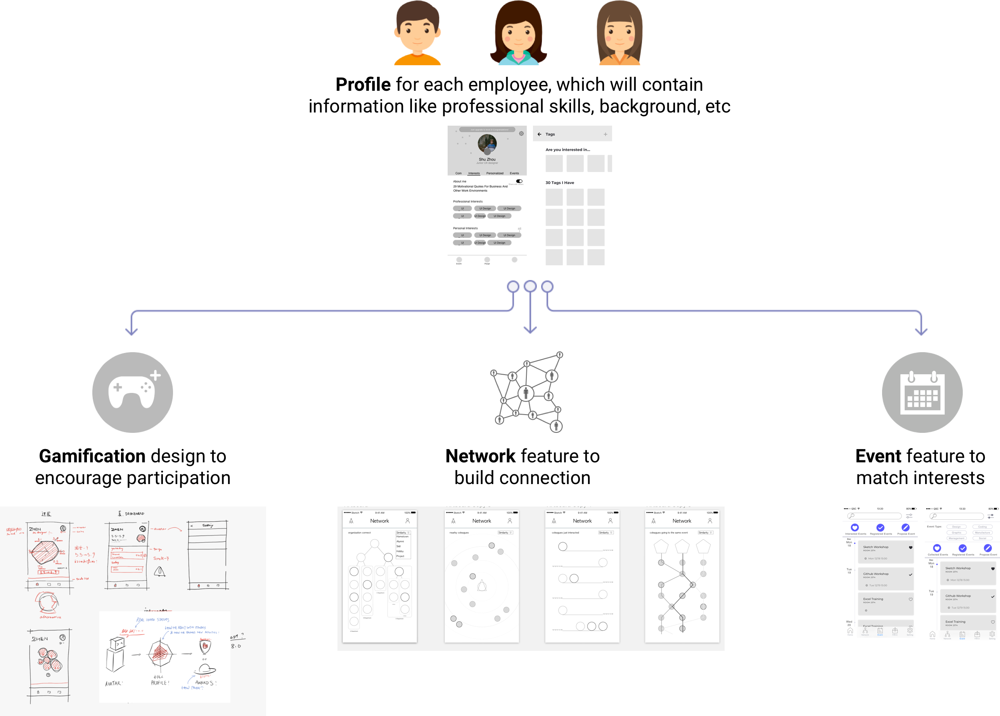
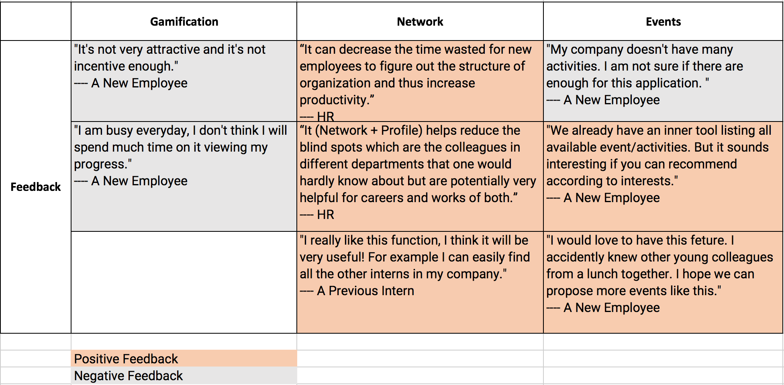
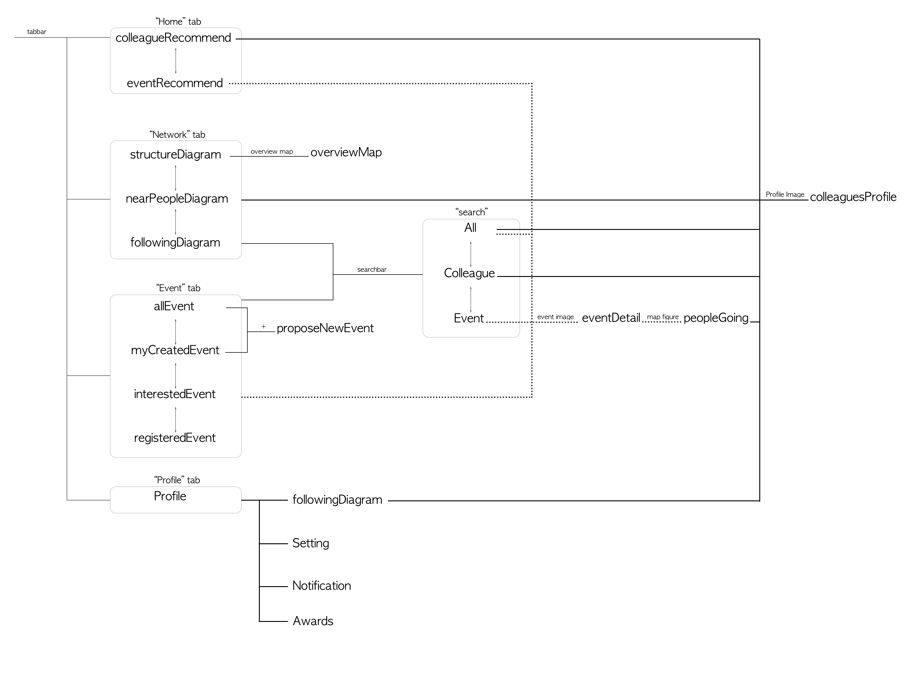

Inneref
Inneref aims to help new employees get involved into the company quickly by providing them easy ways to know colleagues and attend interested activities.
- Project Brief
- 2017.10 ~ 2017.12
- Group Project (team of 5)
- My Role
- UX/UI Designer
- UX Researcher
- Method & Skills
- Interview & Survey
- Brainstorming
- Persona & Storyboard
- Wireframing
- Prototyping
- Iteration
- Tools & Softwares
- Sketch
- Qualtrics
- Invision
- Principle
Problems
Onboarding and engaging new hires is challenging for organizations today. Although most companies understand the importance of good onboarding experience and the necessity to increase employment engagement, in practice, the common orientation practice and philosophy adopted are not effective and efficient enough to achieve the goal.
So far, the problem is very big, so we did research including literature review, competitive analysis, interviews and a survey to dig deeper into this question.
View Design
Research

Literature Review & Competitive Analysis
Through our background research, we identified two pairs of contrasting onboarding approaches we consider as good representations that well characterize organizations’ misconceptions of engaging new employees.
1. Organizational-identity approach V.S. Personal-identity approach
The research calls for a personal-identity approach which allows employees to express themselves authentically.
2. Informational approach V.S. Relational approach
Rather than focus exclusively on providing information, managers should also emphasize relationship development as a means of facilitating information transfer.
Currently most onboarding tools still focus more on the information part. Just take a look at the dashboard of Talmundo(one competitor). We found the market need in a tool to help new employees easily build relationship and express themselves in the company.
Interviews & Survey
The target users are new employees who joined a company for less than 6 months. We did 10 in-depth interviews and a survey with around 60 respondents to validate the market need we identified from the previous research.
Do new employees have a need to build relationship with other colleagues?
Yes.
From the survey, more than half participants chose "Assign a Mentor" as the most valuable onboarding activities. 65% put "Meet New People" among the top two things they look for from onboarding activities. 30% want to engage with colleagues to an extent like hanging out after work. 30% want to know as much people as possible. The reason is because they want to make work efficient, enhance professional network, and be happy in the company.
How do they know colleagues? Any problem with the current solution?
1. Onboarding activities, but...
2. Mentor/manager's introduction, but...
3. Search online( through the intranet, LinkedIn, Skype for Business) by themselves, but...

So now, the engagement problem is about...
The results from interviews and the survey resonate with our initial findings. So by now, the big problem of engaging new employees can be divided into three small questions:
1. How to encourage new employees to attend activities actively?
2. How to familiarize new employees with colleagues working in the same team efficiently?
3. How to connect new employees with colleagues outside their team effectively?
Ideation
Initial Design Ideas
We first agreed on the profile feature since the core value of this product is about people. We then brainstormed many ideas on top of that which can be concluded into three big categories.

- Profile Feature ---- Pull information from LinkedIn, Skype for Business and the intranet to auto-generate a profile.
- Gamification Design ---- The whole app is like a game. The more events employees propose or attend, the more progress he/she will make in the game.
- Network Feature ---- Display the organizational structure in a dynamic way, where new employees can easily know other colleagues.
- Event Feature ---- Match and recommend company activities based on employee's profile.
Feedback

We conducted 4 user tests on our lo-fi wireframes with one hr and three new employees. They gave us valuable feedback which will direct our further design.
Next Step:
- The app should not be designed like a game. So we decided to simplify the gamification part.
- Network part can be connected with other parts(like profile, search, events) to enable a stronger function.
- The simplified gamification may just be a reward system, being used to stimulate both old and new employees to propose events.
- Differentiate the event page with existing tools by strengthening the interest match.
Sitemap
Final Design
Easily know colleagues through Network
- Network section includes a zoomable tree diagram of company hierarchy structure. Users can get familiar with organizational structure quickly, especially for their own team.
- It also includes a compass diagram showing near colleagues. The next time the user feels lost in a room full of unknown colleagues, he/she can just check the phone.
- Both of them include zoomable individual profile images with names and access to individual profiles.


Check company activities and who will attend through Event
- The events listed here are all available events based on user's calendar schedule. Users can post new events as well.
- Detailed event page includes information about colleagues who are going to attend. It visualizes those colleagues' departments and levels, which helps users determine if they want to go or not.
Find colleagues/events effectively by Searching
- Colleagues' background information and events' information will be pulled from different resources like LinkedIn or the company's intranet. Keywords, which shown in the app as tags will be extracted from these information.
- Searching function is based on these keyword tags. For searching colleagues, once the system finds anyone matching, the result will be ranked in a decending order of working years. Users can easily locate people without clicking into the personal profile.

Recommend colleagues/events by learning your interests
- The system will recommend colleagues/events to new employees based on their profiles and events they've participated in.
- There is also a reward system to encourage usage. Users will earn points by attending or proposing activities. The points can be redeemed for different awards.

Introduction Video
Next Step & Take Aways
Next Step
- The UI needs to be refined, especially the info visualization for the network section. According to our current user tests, some would prefer a column layout, some would even want a visualization for other colleagues' workplace in the building. More research needs to be done here.
- The current design is a mobile app. Many users mentioned their companies have some inner portals to publish company activities and other information. We would consider to transfer our design to an embeddable mini program which can be combined with current companies' intranets.
Take Aways
- Find an appropriate entry point is essential. Initially, our problem is big and vague. We only knew employee engagement is an important issue and is not well solved nowadays from our own experience. We did many research and find the absence of relational approach during most onboarding process. It helps us to create a unique product in this area.
- Don't be afraid of well-discussed topics. Employee engagement has been talked a lot for years. With so many competitive products, we doubt if we could come up with something new. But it turns out that the user experience can always be improved, as long as the user needs exists.